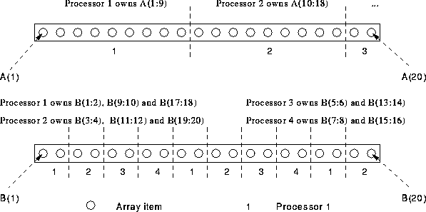

Next: 2D Example
Up: Data Distribution
Previous: HPFacts
- BLOCK(m) -- give processors m elements,
- CYCLIC(m) -- distribute m elements in a
round-robin fashion, will be inefficient.
For example,
REAL, DIMENSION(20) :: A, B
!HPF$ PROCESSORS, DIMENSION(4) :: P
!HPF$ DISTRIBUTE A(BLOCK(9)) ONTO P
!HPF$ DISTRIBUTE B(CYCLIC(2)) ONTO P

For more information, click here

Next: 2D Example
Up: Data Distribution
Previous: HPFacts
Adam Marshall ©University of Liverpool, 1996
Tue Nov 26 19:51:50 GMT 1996